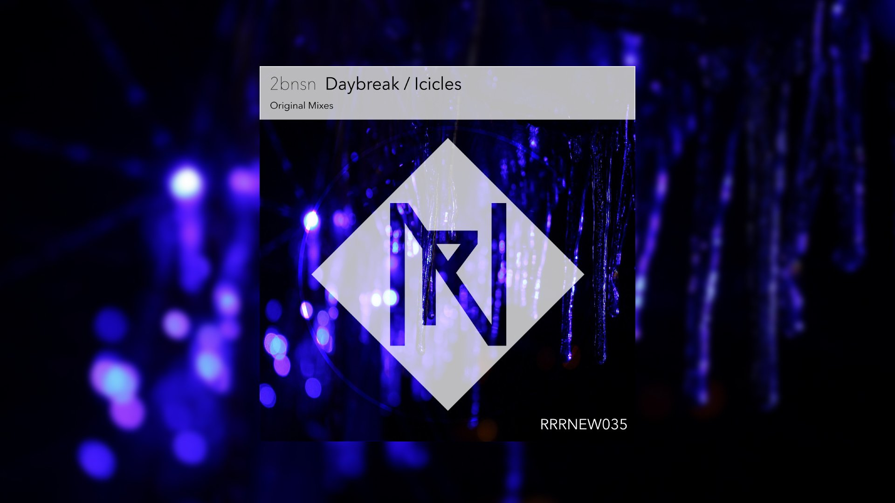

cygnus station
2bnsnと申します。主にMelodic Progressive HouseやらLo-fi Hiphopを作っています。
Anti-Aging Recordに所属しており，ちょくちょくコンピレーションに参加してます。大して強くもないのにサイトだのなんだの作るのは憚られるのですが，こういうの弄るのが好きなので許してください
Releases
2019
-

Daybreak / Icicles
RockRiverRecords
Compilations
2019
- Anti-Aging Record Vol.16
03. Northern Cross - 2bnsn [Progressive House] - Anti-Aging Record Vol.15.5 Hardcore compilation
08. Limelight [J-Core] // FreeDL
2018
Bootlegs
Links / Contacts
- SoundCloud
- @2bnsn
- @2bnsn
- Contact
- 2bnsn.n#gmail.com